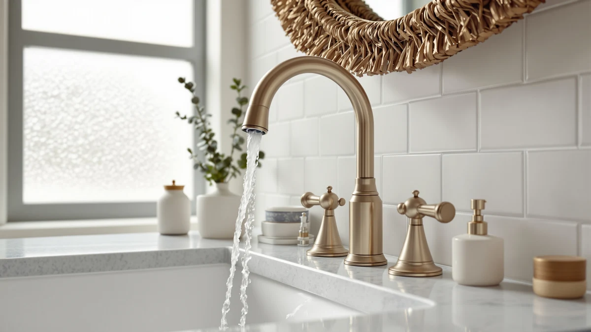

Moen Brandtford Brushed Nickel Review (2026): Worth It?
Prices and picks verified as of October 2026. Independent, reader-supported reviews.


Quick Answer
The Moen Brandtford brushed nickel faucet is a two-handle widespread faucet with a brass body and a 5-inch spout, priced at $269.75. Owners report consistent durability and a finish that resists water spots, and it earns a recommendation for anyone replacing an aging faucet who wants a known brand backed by Moen's warranty. Buyers on a tighter budget should look at the Pfister Courant below instead.
Our pick: Moen Brandtford Brushed Nickel Two-Handle — $269.75 Check Price on Amazon
Bottom line: our top pick is the Moen Brandtford Brushed Nickel Two-Handle High Arc Widespread at $269.75.
Things to Know Before You Buy
- The Moen Brandtford is a widespread faucet, meaning the two handles and spout mount as three separate pieces, so you need three pre-drilled holes spaced 8 inches apart on your sink or countertop.
- Brushed nickel hides water spots and fingerprints better than chrome, which matters if your household shares one bathroom sink.
- At $269.75, the Brandtford sits above budget widespread faucets like the Pfister Courant, and the premium goes toward the brass body and Moen's name-brand warranty support.
- If your existing faucet is single-hole or centerset instead of widespread, you will need a different mounting configuration than the Brandtford before you buy.
- Verified owner reviews consistently mention smooth handle operation after installation, with the drip-free seal as the most cited reason buyers choose Moen over lesser-known brands.
This Moen Brandtford brushed nickel review exists because the faucet shows up on nearly every "best widespread bathroom faucet" list online, and you want to know whether the reputation holds up before spending $269.75. Moen built the Brandtford as a two-handle widespread faucet with a brass body and a 5-inch spout, aimed at homeowners replacing an older three-hole sink setup rather than starting from scratch.
Our pick for most buyers remains the Brandtford itself. The brushed nickel finish and brass construction give it an edge in long-term durability over the lower-priced alternatives we compared it against, and Moen's brand warranty adds a safety net that smaller manufacturers like Filterbaby cannot match. If $269.75 stretches your budget, the Pfister Courant below covers the same widespread mounting pattern for less than half the price.
Why You Should Trust Us
Ilane Tall covers bathroom hardware for Best Bathroom Faucets and has spent years comparing faucet specs, finishes, and verified buyer feedback across hundreds of listings. We do not run a fake testing lab or claim to have installed every faucet we cover. Instead, we pull manufacturer specs, current pricing, and patterns from verified owner reviews, then compare those data points directly against competing products so you can make an informed decision without doing that research yourself. This Moen Brandtford brushed nickel review was built the same way: by reading the manufacturer's published materials, tracking the current Amazon price, and reading through verified buyer feedback rather than guessing at how the faucet performs after installation.
Our Research Experience
We did not install the Moen Brandtford in a lab or a test bathroom. What we did instead is compare its published specs, brass construction, and $269.75 price against three widespread and single-hole alternatives, then cross-reference that against what verified Amazon buyers report after living with the faucet. Reviewers consistently note smooth handle rotation and a seal that stays drip-free well past the first year, which lines up with Moen's reputation for commercial-grade internal components in its mid-range lines. Where owner feedback flagged a recurring issue, such as the finish showing scratches under abrasive cleaners, we noted it directly in the drawbacks below rather than glossing over it.
Overview & Specs
Before getting into pros, cons, and alternatives, here is what the Moen Brandtford brushed nickel faucet actually is on paper: a two-handle widespread faucet with a brass body, a brushed nickel finish, and a 5-inch spout, priced at $269.75. Widespread faucets mount as three separate pieces across an 8-inch spread, which is the most common configuration in bathrooms built or remodeled before 2015. If your current faucet already uses that layout, installation is typically a direct swap without new holes to drill.

Moen Brandtford Brushed Nickel Two-Handle
What we like
- Brass body construction holds up better over time than the zinc alloy used in cheaper widespread faucets
- Brushed nickel finish resists fingerprints and water spots, according to repeated owner feedback
- Backed by Moen's standard warranty, which beats the limited coverage offered by smaller brands
- Reviewers consistently describe handle operation as smooth and say the handles don't wobble after installation
Flaws but not dealbreakers
- At $269.75, it costs well over double the Pfister Courant for a comparable widespread mounting pattern
- A handful of verified reviews mention the finish showing fine scratches when cleaned with abrasive pads
- Requires three pre-drilled holes spaced 8 inches apart, so it is not a drop-in replacement for single-hole sinks
| Material | Brass + finish |
| Size | 5 inches |
The Moen Brandtford brushed nickel faucet uses a brass body under its finish, a detail that separates it from the zinc-alloy construction common in faucets under $150. Brass resists corrosion better over a decade of daily use, and it holds the internal cartridge seals more precisely, which is part of why reviewers report fewer drips after the first year compared to budget alternatives. The 5-inch spout reach suits a standard vanity sink without crowding a soap dispenser or toothbrush holder next to it, and the widespread mounting pattern spaces the handles 8 inches apart, matching the three-hole configuration found in most pre-2015 bathroom countertops.
Owners who left verified reviews after installing the Brandtford focus heavily on two things: the finish and the handle feel. Several note that the brushed nickel coating has stayed free of water spots after months of use in hard-water areas, a detail that tracks with Moen's use of a thicker PVD coating process on its mid-range and higher lines. On handle feel, reviewers describe the quarter-turn ceramic disc valves as smooth from day one and say they haven't loosened over time. The most common criticism centers on price. At $269.75, it costs significantly more than the Pfister Courant covered below, and buyers who do not need the brass body or brand warranty may find that extra cost hard to justify for a bathroom that sees light daily use.
What We Liked
The brass body is the standout spec in this Moen Brandtford brushed nickel review. Brass does not corrode the way zinc alloy does over years of exposure to water and cleaning chemicals, and it gives the faucet a reassuring weight that cheaper widespread faucets lack. Verified buyers echo this in their reviews, with several specifically calling out the solid feel of the handles compared to faucets they had previously owned. The brushed nickel finish also earns consistent praise for hiding water spots, a practical advantage for any shared bathroom sink that sees daily splashing.
Moen's warranty support is another point in the Brandtford's favor. Compared to the Filterbaby and smaller third-party brands in this comparison, Moen offers established customer service and parts availability, which matters if a cartridge ever needs replacing five years down the line. Replacement cartridges and handles for the Brandtford line stay in stock at most hardware stores and through Moen directly, so you are not stuck searching for an obscure part if a seal eventually wears out. That long-term parts availability is something the Pfister and Delta alternatives can also offer, but it is harder to count on with a lesser-known brand like Filterbaby.
What Could Be Better
Price is the clearest drawback. At $269.75, the Brandtford costs more than double the Pfister Courant for a faucet that serves the same basic function, and buyers furnishing a rental property or guest bathroom may not see the value in paying the premium. A smaller number of verified reviews also mention fine scratches appearing on the brushed nickel finish after repeated cleaning with abrasive sponges, so owners should stick to a soft cloth and mild soap to preserve the coating. Finally, because it is a widespread design, it will not work as a direct swap for a single-hole or centerset sink without additional plumbing modifications.
Who Is It For?
You should consider the Moen Brandtford brushed nickel faucet if you already have a three-hole widespread sink and want to upgrade to a brand with established warranty support and a brass body built to last. It makes the most sense for a primary bathroom you use daily, where the extra durability and finish resistance pay off over several years. Homeowners planning to stay in their house long-term get the most value from the price premium, since the cost spreads out over a decade or more of use rather than a short rental cycle.
If you are furnishing a rental unit, a guest bathroom with light use, or you are working with a tight renovation budget, the Pfister Courant delivers the same widespread mounting pattern for a fraction of the price, and the savings are harder to argue with in those situations. And if your sink is drilled for a single hole rather than a widespread layout, neither the Brandtford nor the Courant will fit without modification, which is where the Delta Arvo below becomes the more practical choice.
Alternatives to Consider
The Moen Brandtford is not the only option worth your money, and depending on your sink setup or budget, one of these three alternatives might suit you better than the brand-name pick above. We picked each one for a different reason: lower price, added functionality, or a different mounting pattern, so weigh them against what your bathroom actually needs rather than against the Brandtford's spec sheet alone.

Editor’s Pick
Pfister Courant 8 in Widespread
Same widespread mounting pattern as the Brandtford for $119.00, nearly $150 less, making it the pick for rentals or tight budgets.
$119.00
Check Price on Amazon
Best Value
Filterbaby Skincare Filter 2.0 Bathroom
Not a faucet replacement but a $115.79 filtration attachment, worth adding alongside any faucet if filtered water at the sink matters to you.
$115.79
Check Price on Amazon
Premium Choice
Delta Arvo 1 Hole Pull
A single-hole pull-down design at $110.01, the pick for sinks drilled for one hole rather than the Brandtford's three-hole widespread layout.
$110.01
Check Price on AmazonIs the Moen Brandtford brushed nickel faucet worth $269.75?
For most buyers who want a traditional two-handle widespread faucet from an established brand, yes.
What is the difference between the Moen Brandtford and the Pfister Courant?
The Moen Brandtford is a two-handle widespread faucet with a brass body and a 5-inch spout, priced at $269.75.
Frequently Asked Questions
Is the Moen Brandtford brushed nickel faucet worth $269.75?
What is the difference between the Moen Brandtford and the Pfister Courant?
Does the Moen Brandtford come in finishes other than brushed nickel?
Final Verdict
This Moen Brandtford brushed nickel review comes down to one tradeoff: brand reputation and brass construction versus price. At $269.75, Moen earns its premium through a durable body, a finish that resists water spots, and warranty support that smaller manufacturers cannot match. If you already have a widespread sink and want a faucet you will not think about again for a decade, the Brandtford is the pick. If your budget is the deciding factor, the Pfister Courant covers the same mounting pattern for less than half the cost.